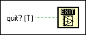

Quit LabVIEW Function
Owning Palette: Application Control VIs and Functions
Requires: Base Development System
Stops all executing VIs and ends the current instance of LabVIEW.
This function shuts down only LabVIEW. The function does not affect other applications. The function stops all running VIs the same way the Stop function does. If there is any unsaved work in memory, you will be prompted to save. Selecting Cancel will abort the quit.

 Add to the block diagram Add to the block diagram |
 Find on the palette Find on the palette |